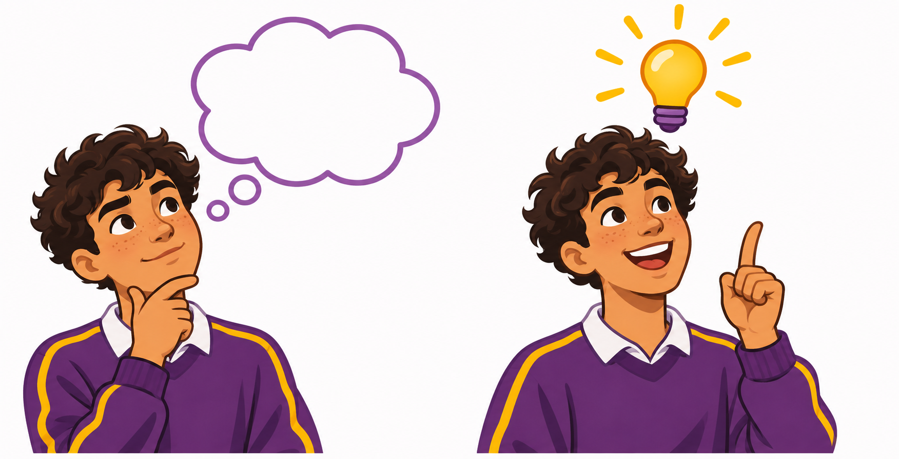

Ten digits, countless numbers
We can give each digit its own binary code and look up what that code means.

Give the ten digits ten codes
Every whole number can be written using the digits 0 to 9. Reuse their codes to build the number one digit at a time.
Try 2012, your age, or a number of your own.
We reuse the same ten digit codes as many times as we need. Longer numbers use more groups of bits.
What could we do with the other patterns?
Eight bits make 256 different patterns. Ten patterns can represent the ten digits. That leaves 246 for other meanings in an eight-bit code system.
Letters, spaces and punctuation can each have an agreed code too. Both computers need to use the same lookup table.
See where the digit codes fit in the ASCII table
This is the shared table used here. The ten digit entries are highlighted in yellow.
Read the lookup table as text
ASCII uses 128 codes and fits in seven bits. We show its codes in eight-bit bytes with a leading 0. The 246 figure describes the available capacity of an eight-bit system after assigning ten digit codes.
Here we are storing the written digits as text. For example, the number 42 is 00101010 as an eight-bit number. The text “42” uses the digit codes 00110100 and 00110010.